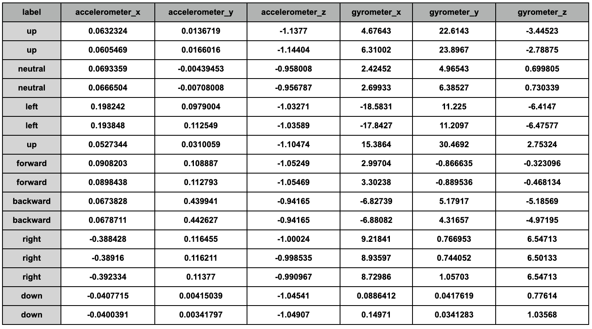
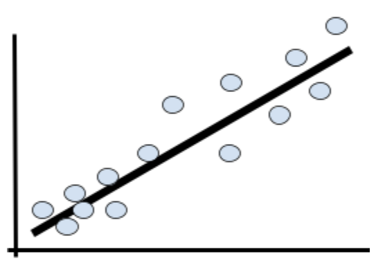
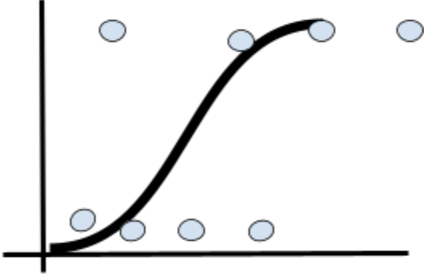
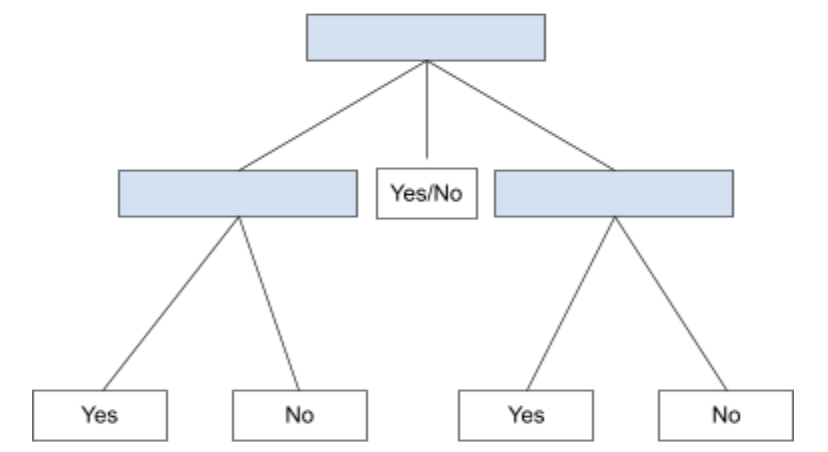
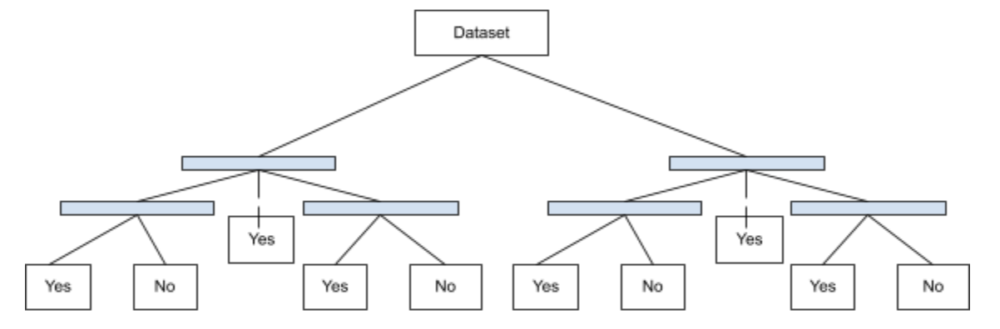

- Machine Learning Exercises
-
Session 1: Introduction to Machine Learning
- Introduction to Machine Learning
- What is machine learning
- Influences of Machine Learning
- Components of Machine Learning
- Representation
- Evaluation
- Optimization
- Types of Machine Learning
- Challenges of Machine Learning
- Before starting your own machine learning project
-
Session 2: Bayesian Decision Theory
- What is a Bayesian network?
- How is a Bayesian network represented?
- What Directed Acyclic Graphs Tell Us
- Applications of Bayesian Networks
-
Session 3: Intro to Supervised Learning
- Intro to Supervised Learning
- When to use supervised learning
- Types of Supervised Learning
- Classification
- Regression
- Examples of Supervised Learning Algorithms
- Linear Regression
- Logistic Regression
- Decision Trees
- Random Forest Regression
-
Session 4: Intro to Unsupervised Learning
- When to use unsupervised learning
- Types of Unsupervised Learning
- Clustering
- Association
- Example of an Unsupervised Learning Algorithm
- K-Means Clustering
-
Session 5: Dimensionality Reduction
- Intro to Dimensionality Reduction
- Feature Selection
- Types of Feature Selection
- Wrappers
- Filters
- Embedded
- Feature Extraction
- Example of A Feature Extraction Technique
- Principal Component Analysis
-
Session 6: Perceptrons and Neural Networks
- Influence of Biological Neurons
- Development of Neural Networks
- Perceptron
- What is a perceptron?
- Parts of Perceptron
- Neural Network
-
Session 7: Deep Learning
- Deep Learning vs Machine Learning
- Deep Neural Network
- Deep Learning
- Transfer Learning
- Number of Neurons for Each Hidden Layer
-
Session 8: Machine Learning Research Trends
- Applications of Machine Learning in Various Fields
- Full-Stack Deep Learning
- Natural Language Processing
- Natural Disaster Warning
- Gaming
- Resources to Look into Latest Research
Session 3: Intro to Supervised Learning
Intro to Supervised Learning

- Given a dataset collected from a quadcopter that’s accurately labeled, the machine can create a model based on what it learned from the dataset to analyze another set of data.
- This preliminary dataset that’s labeled is called the training data set. Typically, 80% of this dataset will be used as training data and 20% will be used to see if the model created from 80% of the overall dataset was accurate.
- As the machine takes in new information, it updates the weights that make the model. The more data the machine takes in, the more accurate the model will be.
- In this case, we see the inputs: accelerometer_x, accelerometer_y, accelerometer_z, gyrometer_x, gyrometer_y, gyrometer_z. Depending on the values of each input, it will give an output, labeled as either neutral, left, right, up, down, forward, backward.
When to use supervised learning
- When there is data that’s already collected and the results are known, and the goal is to build a model using the training dataset to make a prediction
- Although it can take a lot of work and computation time to make a model as accurate as possible, supervised learning is powerful and will still analyze large amounts of data faster than humans.
Types of Supervised Learning
- Classification
- Classification uses a Classifier model to determine an output that is discrete, or category-based.
- Binary classification: Only has two possibilities such as 0 or 1, true or false, yes or no. Is it a pencil or something else?
- Multi-class classification: More than two possibilities
- For example, using the earlier figure with the quadcopter data, it has a discrete output of either neutral, left, right, up, down, forward, backward. What genus is this animal a part of?
- Regression
- Regression determines an output that is continuous, or value based.
- Unlike classification, the model will predict a value that is ideally close to the actual value.
- For example, a regression that is used to predict a stock price will output a dollar amount, such as $108.95.
Examples of Supervised Learning Algorithms
- Linear Regression 
- Used to determine a prediction value
- Formula: y = mx + b
- Labels = y
- Training data = x
- b and m = updated every time the machine takes in new data
- Logistic Regression 
- Binary classification
- Also known as a Sigmoid curve
- For linear regression, we use y = mx + b but logistic regression uses the sigma of that equation: σ(y) = σ (mx + b) where there can be multiple “mx”, depending on how many variables there are like σ(y) = σ (mx1 + mx2 + mx3… + b)
- Decision Trees 
- Solves classification and regression problems but not always the best way
- Uses tree structure, goes from the root to leaf node over and over again
- Internal Node: Nodes that have at least one child is an attribute
- Leaf Node: Nodes that don’t have a child is a class label
- The lines are the output
- Random Forest Regression 
- Uses multiple decision trees to determine the output, much better than a decision tree since there is a variety of trees
- These decision trees are a result of “bootstrapping” or “bagging” the dataset into multiple different decision trees using randomly selected parts of the data